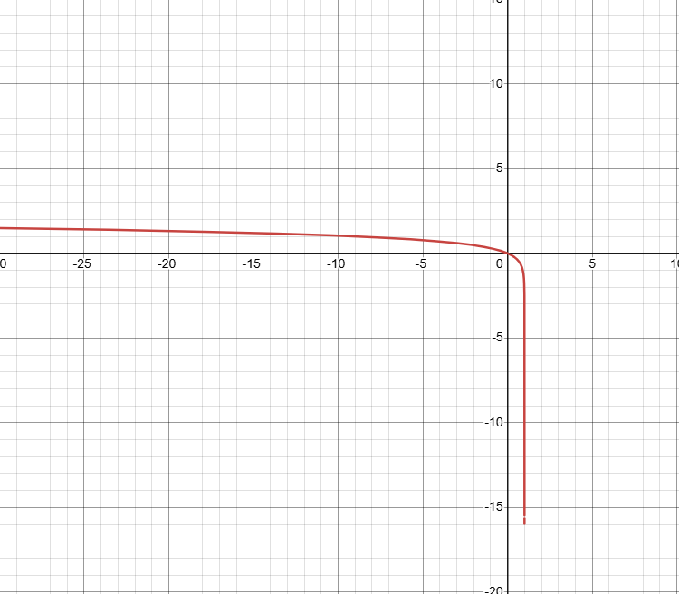
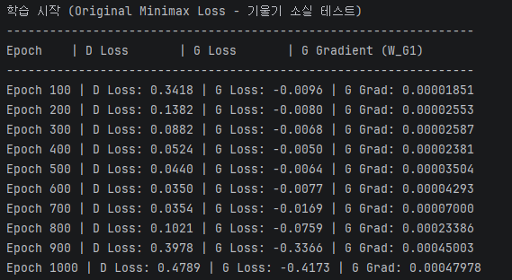
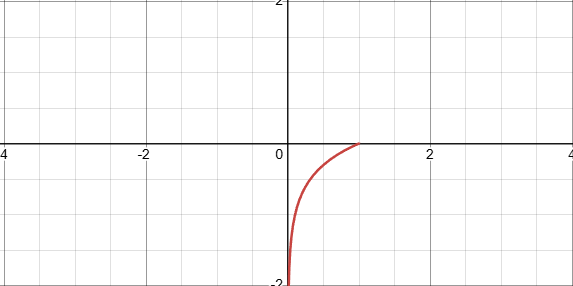

생성적 적대 신경망에(GAN) 대하여
딥러닝은 2014년 판별 모델 분야에서는 큰 성공을 거두었으나 생성모델은 성과를 내지 못했습니다.
그 때 이안 굿펠로우(Ian Goodfellow)와 연구진은 복잡한 마르코프 체인이나 근사추론을 배제하고
역전파와 드롭아웃만을 사용하여 데이터를 생성하는 GAN을 발표하였습니다.
1. 개요 및 구성요소
1-1. 개요
적대적 모델링 프레임워크는 일반적으로 심층 신경망으로 매개변수화된 두 개의 구별되고 적대적인 미분 가능 함수를 동시 다발적으로 실행하고 최적화한다.
쉽게 말하자면 인공 신경망에 생성자와 판별자를 두어 적대적인 관계를 유지하며,
역전파를 위한 미분 가능한 함수를 생성자와 판별자를 학습 과정 내내 동시에 훈련한다.
이는 한쪽이 편향되게 학습이 잘되는 것을 막아주며 성능을 끌어올리는 과정을 반복한다.
1-1. G
첫 번째 구성 요소는 생성 모델 (Generative Model)로 $G(z; \theta_g)$로 표기한다.
쉽게 비유를 들어 설명하자면,
$G$는 위조 지폐를 찍어내는 기계이며
$\theta_g$는 이 기계를 조작하는 요소 이다. ( 인공 신경망의 가중치 )
$p_{data}$와 $p_g$는 진짜 지폐의 특징을 $p_{data}$라 하고, 만들어낸 가짜 지폐의 특징은 $p_g$로
$G$라는 기계를 통해 $\theta_g$를 조절하여 $p_{data}$와 $p_g$를 최대한 동일하게 만드는 것을 목표로 한다.
여기서 사전에 정의된 확률 분포인 $p_z(z)$에서 무의미한 난수 $z$를 통해 이미지를 매핑한다.
여기서 매우 중요한 점은 생성 모델 $G$가 확률 밀도 함수를 명시적으로 정의하지 않는다는 것이다.
대신, 샘플 $G(z)$의 분포로서 $p_g$를 암묵적으로 정의하는 표본 추출 메커니즘을 제공한다

사전에 정의된 확률 분포 $p_z(z)$란 AI학습 이전 어떤 규칙으로 난수를 뽑을지 정해놓은 것 이다.
우리는 이때 난수를 발생 시킬 때 아무렇게나 발생 시키는 것이 아닌
정규 분포(가우스 분포)나 균등 분포등 규칙에 따라 발생시킨다.
확률 분포는 모델이 학습하여도 불변이며 그저 G에게 난수를 공급해주는 단순한 발생기이다.
왜 정규 분포나 균등 분포 등 규칙에 따르는 가 하면
1. 계산의 효율성
컴퓨터에서 난수 발생은 비용이 꽤 드는 작업인데 해당 분포에서 뽑는 것이 가장 효율적이다.
2. 연속성과 보간
만약 우리가 $z_1$에서 웃는 얼굴을 조금 다른 $z_2$에서 우는 얼굴을 만든다고 하면
정규 분포는 연속적이기에 웃는 얼굴이 서서히 우는 얼굴로 변하는 과정을 관찰 할 수 있다.
논문에서도 잠재 공간 $z$의 좌표 사이를 보간**하여 숫자가 서서히 다른 숫자로 변하는 모습을 증명했다.
3. 인공 신경망의 활용
G는 컴퓨터 입장에선 함수 근사기 이다.
백지의 종이를 즉, 정규 분포 노이즈를 주더라도 신경망은 학습을 통해 백지를 지폐로 변환시킨다.
우리가 다루기 쉬운 재료를 주면 신경망은 그 것들을 다듬어준다.
1. 보간 (Interpolation):
두 개의 서로 다른 지점(데이터) 사이의 비어있는 중간 값들을 수학적 규칙에 따라 부드럽고 자연스럽게 추정해서 채워 넣는 기법. GAN에서는 한 이미지에서 다른 이미지로 변할 때 중간 과정이 깨지지 않고 연속적이고 자연스럽게 이어지는 것을 보여주는 강력한 성능 증거로 쓰인다.
예를 들어 $z_1 = 1$과 $z_2 = 5$가 있을 때 각각의 숫자를 선형적으로 변화시켜 서서히 1을 5로 만드는 것 이다
(예: $z_1$ 90% + $z_2$ 10% $\rightarrow$ 80% + 20% $\rightarrow$ ...)
이는 신경망이 외운 것이 아닌 이해했음을 증명한다.
이전의 생성 모델이 이미지를 거대한 수학으로 만드는 것으로 완벽하게 적어내려 했다면
$G$는 노이즈 $z$를 입력 받아 $G(z)$를 계속해서 만들어주는 공장 역할을 한다.
여기서 수 많은 이미지들이 자연스레 어떤 특징을 지니게 되며 이는 분포($p_g$)를 의미한다.
이는 곧 가짜가 모여 자연스럽게 진짜와 비슷한 데이터의 무리 ($p_g$)가 형성된다는 것이다.
1-3. D
두 번째 구성 요소는 판별 모델(Discriminative Model)로, $D(x; \theta_d)$로 표기된다.
$G$가 위조지폐 생성자라면 $D$는 경찰에 비유된다.
이 모델은 이진 분류기로서 기능하며, 표본 $x$가 생성 모델 $G$에 의해 생성된 데이터가 아니라,
$p_{data}$에서 유래했을 확률을 나타내는 단일 스칼라 값을 출력한다.
2. 적대적 프레임워크의 수학적 공식화 및 최소최대 게임 이론
목차 1에서 살펴본 두 신경망 간의 역학은 영합, 최소최대 게임으로 수학적 모델링이 이루어 진다.
가치 함수(Value Function) $V(G, D)$는 두 모델의 최적화 궤적을 지시하며 다음과 같이 정의된다.
$D$는 실제와 $G$로 생성한 가짜에 올바른 레이블을 할당하는 확률[logD(x)]를 최대화하는 훈련을 한다.
$G$는 $D$와 반대로 $\log(1 - D(G(z)))$**를 최소화 하도록 훈련한다.
$\mathbb{E}_{x \sim p_{data}(x)}[\log D(x)]$는 실제 데이터 분포($p_{data}$)에서 뽑은 진짜 데이터($x$)의 결과값들의 평균값이다.
$\mathbb{E}_{z \sim p_z(z)}[\log(1 - D(G(z)))]$는 임의의 노이즈 분포($p_{z}$)에서 나온 무작위 결과 값($z$)의 평균값이다.
즉 $\min_G \max_D$는 $G$는 값을 최대한 작게, $D$는 값을 최대한 크게 만드는 것을 목표한다.
$V(D, G)$는 점수판으로서 $\min_G \max_D$의 최소최대 게임의 결과가 나오는 것 이다.
즉,$1 - D(G(z))$는 판별자$D$가 가짜 데이터를 진짜라고 착각할 확률이며,
최대 우도 추정 및 교차 엔트로피의 수학적 특성때문에 $\log$를 취하였다.
Log를 쓰는 이유 $\mathbb{E}$ 여러 진짜 데이터를 넣었을 때 나오는 결과값들의 평균을 구하라는 뜻이다.
이 경쟁 과정은 $G$가 진짜 같은 가짜를 만들어 내며 $D$가 그것을 판별하는 능력을 동시 향상한다.
2-1. 포화 손실
2-1-1. 포화 상태
초기 $G$는 무작위 매개변수로 초기화되어 있어 실제 데이터 분포 $p_{data}$와는 먼 표본을 생성한다.
이 때 매개변수화된 $D$는 이런 표본들을 매우 높은 확신으로 거부할 수 있다.
$D(G(z))$가 0에 수렴 할 때 $\log(1 - D(G(z)))$ 가 포화 상태에 이르게 되며,
$G$의 기울기 소실 현상을 유도하여 학습을 완전히 중단시킨다.
즉 학습 초기엔 $D(G(z)) \approx 0$이며, 목표는 $\min_G \log(1 - D(G(z)))$ 이며,
$\min_G \log(1 - D(G(z)))$를 $y = \log(1 - x)$로 가정하여 미분 하였을 때 $y' = -\frac{1}{1-x}$이며,
$x \approx 0$일 때, 기울기는 $-1$로 $G$에겐 오차가 커 큰 피드백이 필요하지만
역전파 되는 기울기가 -1과 같은 상수에 불과해 업데이트가 거의 되지 않는다.
즉, $\min_G \log(1 - D(G(z)))$ 에겐 큰 기울기가 필요하나, 업데이트 값이 작아 학습이 아예 멈춰버린다.

여기서 $x$축은 $D(G(z))$ 즉, 판별자가 가짜 이미지를 진짜로 믿을 확률이다.
($D(G(z)) \approx 0$)일때 $G$의 값이 최악이나, 위 그래프에서 보다시피 기울기가 완만하다.
이 것이 바로 포화상태이며 그래프가 너무 평평해 가중치를 업데이트 할 동력을 얻지 못하는 것 이다.
2-1-1. 포화 손실 테스트
구현 환경 Python == 3.10TensorFlow == 2.10.1
numpy == 1.23.5 GitHub — Azure_B / StudyBlogPyFiles
z_dim = 100
x_dim = 28 * 28
GAN은 저차원 잠재 공간에서 고차원 데이터 공간으로 매핑하는 함수를 학습한다.
즉 100 차원 노이즈 $z$가 들어 왔을 때,
MNIST 이미지와 같은 28*28 고차원 데이터를 생성하는 함수를 학습하는 것 이다.
def build_generator():
model = tf.keras.Sequential([
# 입력 z를 받아 128개 노드의 은닉층으로 연결 (ReLU 활성화)
tf.keras.layers.Dense(128, activation='relu', input_shape=(z_dim,)),
# 784 픽셀의 이미지로 출력 (Sigmoid 활성화)
tf.keras.layers.Dense(x_dim, activation='sigmoid')
])
return model
def build_discriminator():
model = tf.keras.Sequential([
# 784 픽셀 이미지를 받아 128개 노드의 은닉층으로 연결
tf.keras.layers.Dense(128, activation='relu', input_shape=(x_dim,)),
# 0~1 사이의 진짜일 확률 1개 출력 (Sigmoid 활성화)
tf.keras.layers.Dense(1, activation='sigmoid')
])
return model
generator = build_generator()
discriminator = build_discriminator()
딥러닝의 가중치 매개변수를 수동으로 만들었다.
W는 평균이 0이고 표준편차가 0.1인 정규분포에서 무작위 값을 뽑아 행렬을 만들고,
B는 모두 0으로 꽉채워 만들었다.
optimizer_G = tf.optimizers.Adam(learning_rate=0.0002)
optimizer_D = tf.optimizers.Adam(learning_rate=0.0002)
eps = 1e-7
@tf.function
def train_step_original(x_real, batch_size):
z = tf.random.normal([batch_size, z_dim])
with tf.GradientTape() as tape_G, tf.GradientTape() as tape_D:
# 가짜 데이터 생성
x_fake = generator(z, training=True)
# 판별자 평가
D_real = discriminator(x_real, training=True)
D_fake = discriminator(x_fake, training=True)
# ---------------------------------------------------------
# [판별자 손실 계산]
# 수식: -[log(D(x)) + log(1 - D(G(z)))]
# ---------------------------------------------------------
loss_D = -tf.reduce_mean(tf.math.log(D_real + eps) + tf.math.log(1.0 - D_fake + eps))
# ---------------------------------------------------------
# 수식: log(1 - D(G(z))) 최소화
# 여기서 생성자의 기울기 소실(Vanishing Gradient)이 발생함
# ---------------------------------------------------------
loss_G = tf.reduce_mean(tf.math.log(1.0 - D_fake + eps))
# 역전파 계산 (trainable_variables를 통해 가중치 리스트를 자동으로 가져옴)
grad_G = tape_G.gradient(loss_G, generator.trainable_variables)
grad_D = tape_D.gradient(loss_D, discriminator.trainable_variables)
# 가중치 업데이트
optimizer_G.apply_gradients(zip(grad_G, generator.trainable_variables))
optimizer_D.apply_gradients(zip(grad_D, discriminator.trainable_variables))
# Keras Sequential 내부의 첫 번째 Dense 레이어 가중치(W)의 기울기 절대값 평균 추출
# grad_G[0]은 모델의 가장 첫 번째 레이어(W_G1)의 기울기를 의미
grad_G_mean = tf.reduce_mean(tf.abs(grad_G[0]))
return loss_D, loss_G, grad_G_mean

Epoch 600까지의 진행 상황을 보면 판별자 $D$가 생성자 $G$의 생성물을 잘 검수하고 있지만,
$G Gradient$ 즉 G의 기울기가 학습을 시키기엔 현저히 떨어져 있는 것을 볼 수 있다.
2-1-2. 비포화 손실
이 때, 포화 손실을 해결하기 위해서 생성자가 $\log(1 - D(G(z)))$를 최소하 하는 대신
$\log D(G(z))$를 최대화 하도록 목적 함수를 변경한다.

$\log(x)$는 x가 0에 가까울 때 기울기가 매우 가파른 특성을 지닌다.
따라서 학습 초기 $D(G(z)) \approx 0$인 상황에도 $\log(D(G(z)))$는 생성자에게 큰 기울기를 제공한다.
따라서 비포화 손실은 생성자의 초기 학습 속도를 높이기 위해 $\log(1-x)를 최소화 하는 대신
$\log(x)$를 최대화 하도록 훈련한다.
생성자가 다양한 데이터를 만들지 못하고, 판별자를 속이기 쉬운 하나의 데이터만 반복해서 생성한다.
기술한 위 두 문제는 GAN의 새로운 모델이 출시되었는데, 추후 리뷰 할 수 있도록 하겠다.
2. 전역 최저점 및 정보 이론
적대적 프레임워크의 가장 큰 성과는 전역 최저점의 존재와 도달 가능성에 대한 증명이다.
생성자 G가 고정되어 있다고 가정 할 때, $D$는 $V(G, D)$를 최대화 하려한다.
이를 위해 기댓값 형태의 식을 적분 형태로 변환한다.
먼저 $\int_x p_{data}(x) \log(D(x)) dx$는 실제 데이터$x$를 보고 진짜라고 잘 맞추는가? 를 의미한다.
$D(x)$가 진짜라고 판단할 확률이므로, log(1)이 0에 가까워져 전체 값이 최대화가 된다.
그다음 $\int_z p_z(z) \log(1 - D(G(z))) dz$는 가짜 보고 가짜라고 맞출 이다.
$D(G(z))$는 가짜를 진짜라고 믿을 확률이며, D의 성능이 좋을 수록 $D(G(z))$는 0에 가까워진다.
하지만 2번째 수식은 가짜데이터$z$를 기준으로 적분을 하여 아래와 같이 변수변환을 해준다.
기댓값의 수학적 정의에서 어떤 사건의 평균적인 결과인 기댓값을 구할 때
사건의 값 X 그 사건이 일어날 확률을 모두 더하게 된다.
이 때 데이터가 이산형일 경우 $\sum (\text{값} \times \text{확률})$이며, 연속형일 경우 $\int (\text{값}(x) \times \text{확률 밀도}(p(x))) \, dx$를 쓴다.
2.
기댓값($\mathbb{E}$)의 정의
실제 데이터 x가 나타날 확률 ($p_{data}(x)$)에 그 $x$를 진짜라고 판단 할 점수$(\log(D(x)))$를 곱해서 모두 더하라.
↓
실제 데이터($p_{data}$)는 이미 세상에 일어난 존재.
$D$의 목표는 이 진짜로 일어난 데이터에게 높은 점수를 주는 것.
따라서 적분식은 감별자가 실제하는 데이터들을 얼마나 진짜라고 잘 판단하는 것인가?의 성능 지표가 되어짐.
$G$가 노이즈 $z$를 입력받아 가짜 데이터 $x$를 만들어내므로,
생성된 가짜 데이터들도 결국 $x$라는 공간 위에 분포를 형성하게 된다.
이렇게 해야만 $D$가 각 데이터 마다 어떤 결과를 내릴 때 $x$하나만으로 최선인지 판단 할 수 있다.
이제 함수의 값을 최대화 하는 $D(x)$를 찾으면 된다.
해당 수식은 결국 $f(y) = a \log(y) + b \log(1-y)$와 같으며,
(여기서 $a = p_{data}(x)$, $b = p_g(x)$이며, $y \in (0, 1)$, $a, b > 0$인 양의 실수이다.)
즉 감별자가 정답을 100% 맞추는 확률을 찾는 것이다.
여기서, a는 $p_{data}(x)$이며, b는 $p_g(x)$, y는 $D(x)$이다.
해당 식을 정리하면 $y = \frac{a}{a + b}$이므로, $D$가 가장 학습이 잘된 상태이다.
이 값을 다시 원상태로 표현하면
이 방정식은 $D$가 실제인지 가짜인지 판단한 확률을 나타내는 것 이며, 만약 ($p_g = p_{data}$)라면
$D$는 모든 입력에 대해 $D^*_G(x) = \frac{1}{2}$를 출력 할 것 이다.
$D^*_G(x)$를 최소최대 가치 함수에 대입하여 $G$의 훈련 목적을 $C(G)$로 재구성 될 수 있다
이 훈련 기준이 정보 이론의 근본적 발산 측정 지표와 내재적으로 연결되있음을 증명한다.
방정식에서 $\log(2)$를 분리하고 결합함으로써 쿨백-라이블러 발산으로 변경하고,
이 두개의 발산은 젠슨-섀넌 발산으로 정의된다.
$C(G)$의 전역 최솟값이 오직 $p_g = p_{data}$일 때만 달성된다는 논문의 정리에 따르면,
$p_g = p_{data}$인 경우: 최적의 판별자 $D^*_G(x) = \frac{1}{2}$이 된다
이를 $C(G)$에 대입시 $C(G) = \log \frac{1}{2} + \log \frac{1}{2} = -\log 4$ 이며,
$C(G) = V(D^*_G, G)$에서 $-\log(4)$를 빼면 다음과 같은 형태이다.
이 식은 $p_(g), p_(data)$ 사이의 JSD임을 알 수 있다.
JSD는 항상 0 이상이며, 두 분포가 일치할 때만 0이 되므로,
$C^* = -\log 4$가 $C(G)$의 전역 최솟값임을 증명했으니
생성 모델이 데이터 분포를 완벽하게 복제하는 $p_g = p_{data}$뿐이다.